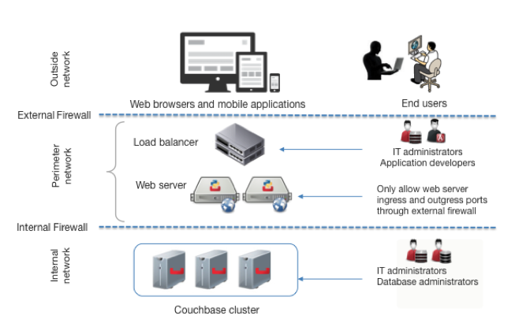

Best security practices
Best practices for security consist of guidelines and tips to provide security features throughout the network.
Security is needed on the whole Couchbase infrastructure including the internal, perimeter, and outside network. It must be maintained and continually kept up to date to safeguard against malware and hackers.
Security can be viewed in terms of physical protection of the network infrastructure and databases and applications running on that infrastructure.

Infrastructure protection covers the network itself, storage devices, servers, virtual machines, and the operating systems installed on these machines. Database and application protection covers Couchbase Server itself and different applications used with it.
Where is security enforced
Security must be maintained and updated in the following areas:- Outside network, where web browsers and mobile applications are located.
- Perimeter network between the internal and external firewall. This typically consists of web servers and load balancing machines. This network provides physical separation between back-end and external interfaces, such as the web and mobile applications.
- Internal network that is within the internal firewall. Typically, Couchbase is deployed in the internal network.

Requests from the external network come through an external firewall and are directed to the load balancing unit, where security administrators can introduce packet filtering and blocking of malicious IP addresses. After that, the requests proceed to a web server.
On the second firewall level, between the perimeter and internal network, the IT or database administrators can allow only Couchbase ingress and egress ports to be accessible through the internal firewall.
While the external firewall allows only certain ports to be open, the internal firewall allows only certain Couchbase ports to be open.